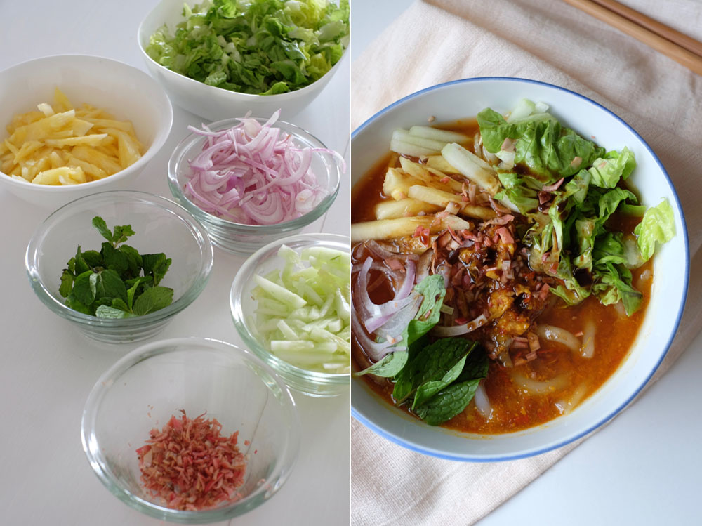
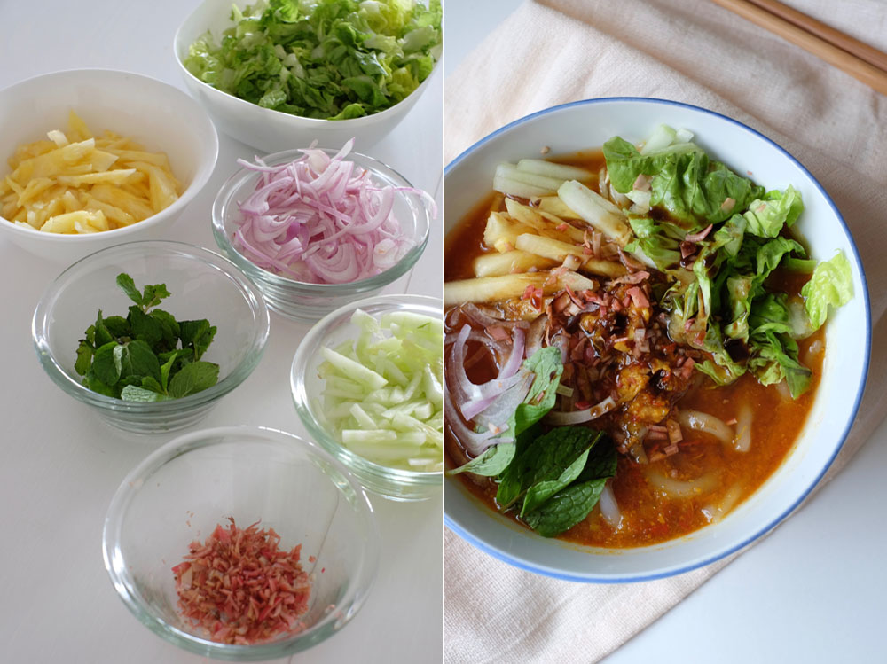

Asam Laksa is a famous Malaysian noodle soup known for its tangy, spicy, and aromatic flavor. The name "Asam"
means "sour" in Malay, referring to the tamarind (asam jawa) that gives the broth its signature sourness. The
dish features thick rice noodles served in a fish-based soup, usually made with mackerel, tamarind, lemongrass,
and chili paste, topped with fresh herbs and vegetables like cucumber, mint leaves, and pineapple.
Asam Laksa is most closely associated with Penang, where it is considered a must-try street food and a symbol of
the island’s multicultural heritage. The origins trace back to the Peranakan (Straits Chinese) and Malay
culinary influences, blending Chinese noodle traditions with Malay and Southeast Asian spices. Over time, it
became a popular comfort food across Malaysia, with regional variations in states like Kedah, Perlis, and
Sarawak.
Internationally, Penang Asam Laksa has gained recognition as one of the world’s best dishes, even making it to
CNN Travel’s list of top foods.
 
